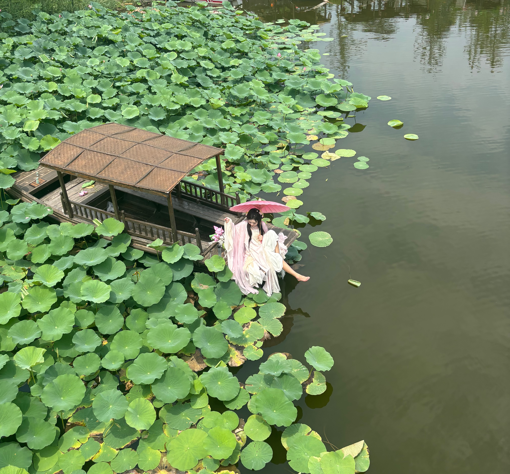
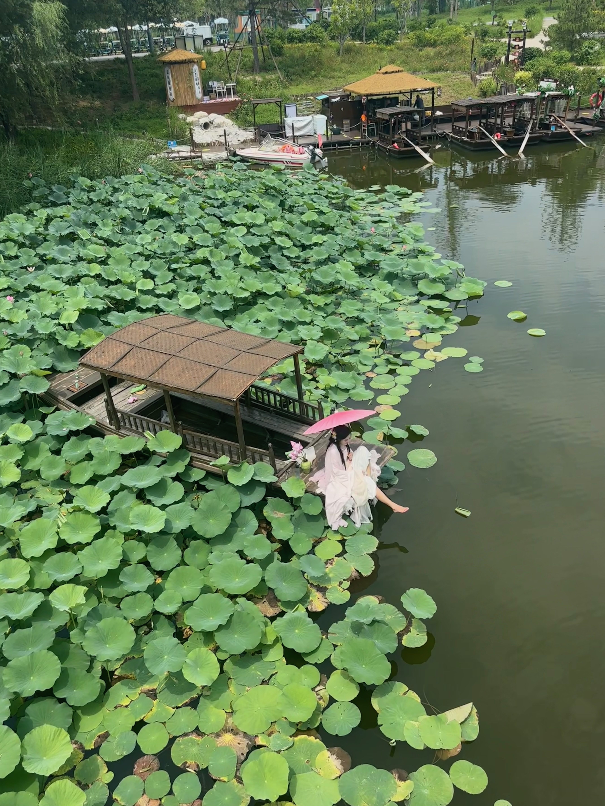
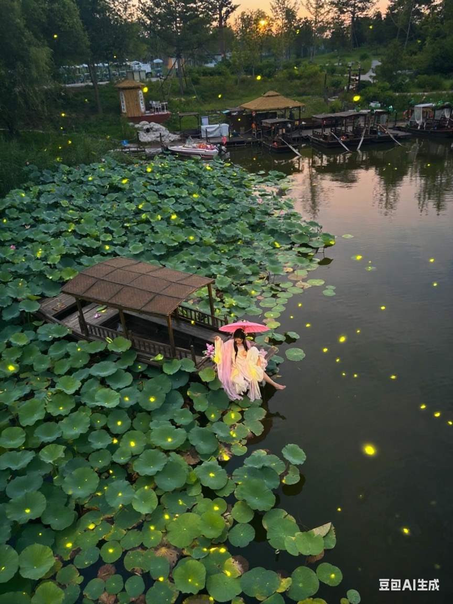

我今年最喜欢的一张照片
2025-08-03
0. 原图
这是一年以来，我拍的照片中，最好的一张：

也许是因为我头脑中的幻想，给这张照片添加了额外的滤镜。我尝试过对这张照片做一些修改，比如剪裁、调色之类，统统都觉得不好。我还是最喜欢这种，没有任何修改的原图。
对了，我说这是 “最好的一张”，而不是 “最好看的一张”。
这张照片好在，我设身处地的看着这样的场景，随手拍下了这张很美的照片。我喜欢这样的景色，也喜欢这样的生活。尽管那天很热，真的特别热。
这张照片的元素实际上很乱，尤其是背景里有船，还有一些杂乱的树、白色的石头。我喜欢的是，在这种杂乱的环境中，纯净、干净的人物，反而能和杂乱的背景形成对比。
1. 裁剪版本
把背景中的船裁剪掉是不是会好一点？完全没有，裁剪后的照片，有很明显的被裁剪的感觉，画面信息变得很少，干净但是没有 “杂乱中的干净” 的感觉。
2. 旋转版本

这张照片的差异不是很明显，苹果手机有个自动裁剪的功能，厉害之处在于，把图片稍微右旋转了一下，船底的线和整个画面变成平行的了，而不是原图中船身是斜着的感觉。
这样调整之后，人物确实更正了，整张照片也更正了，但是又缺少了一点宽广的视角的感觉。这种差异尤其放大图片之后看，会明显一点。
3. 调色版本

苹果手机的智能调色。水更绿，对比度更高，更加不真实，我不喜欢。
4. 关键帧版本
照片拍的是 live 图，可以选择一些其他的关键帧。这张其实也不错，是一个漂亮的侧面。但是和原图相比，少了一些活波的动作。
5. AI 版本
豆包 AI 的修图能力不错，尤其是某些关键词、某些场景，可以出来一些很好的效果。小红书上不少 Coser 都直接用豆包 P 图来换背景。
不得不说效果确实不错，但是这个图一看就不是真实的场景。
6. 视频版本
豆包还能一键把图片变视频，毕竟是基于抖音那么大量的视频数据做训练，豆包在这方面的能力挺强大。